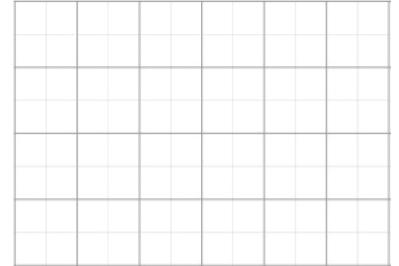
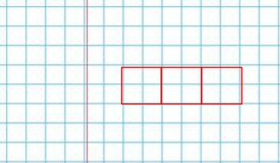
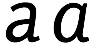

Escribir bien
Bueno, ya vamos a empezar a escribir vocales y consonantes. Pero antes de empezar quiero recomendarte dos cosas muy importantes: uso de una cuadrícula y tipografía.
La cuadrícula
Como ya sabes, hay vocales horizontales y vocales verticales. Pero, sea como sea, una sílaba tienen siempre que entrar en un cuadro. ¿Por que dividirlo en 4? Para ayudarte a que uses las proporciones bien. Piensa que:
- Si la forma de la vocal es larga en sentido vertical, se coloca a la derecha de la consonante inicial.
- Si es larga en sentido horizontal, se sitúa debajo de la consonante inicial.
- Si hay más de dos letras, ocupan lo mismo que 3 o más.
Por eso no me cansaré de repetir: practica con cuadros para que todas las sílabas te ocupen lo mismo.
¿Qué cuadrícula usar? Si sigues mi consejo, escribe en cuadernos de cuadros. Esta es la cuadrícula de los cuadernos coreanos:

Esta cuadrícula que te aconsejo, no tienen que ver con nuestros cuadernos pero, puedes usar un cuaderno normal ¿no? cada 4, escribe una sílaba.

Por si tienes tablet, te dejo una plantilla en PDF para que escribas en ella.
También te dejo un enlace para descargar el PDF gratuito "Free hangul practice sheets" de koreanclass101.com, que está bien para que practiques escribir en tu precioso cuaderno de cuadros. Pero antes...
La forma de las consonantes
Al igual que ocurre con nuestro alfabeto, donde algunas personas representan de manera diferente la letra "a" por ejemplo lo mismo ocurre con algunas letras en coreano, sobre todo 3 de ellas. Al menos, ellos no tienen mayúsculas y minúsculas, por lo que solo tendrás que decidir cómo escribir 3 consonantes. Pero, antes de decirte cuales son, ¡juguemos!